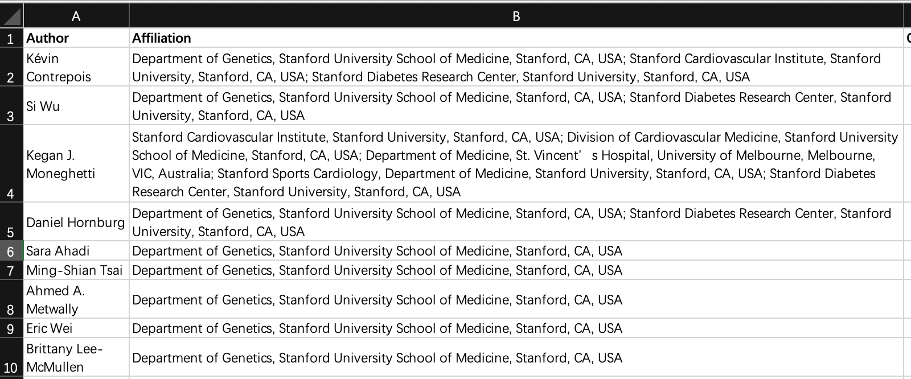
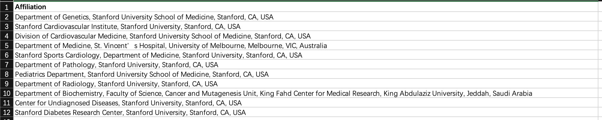
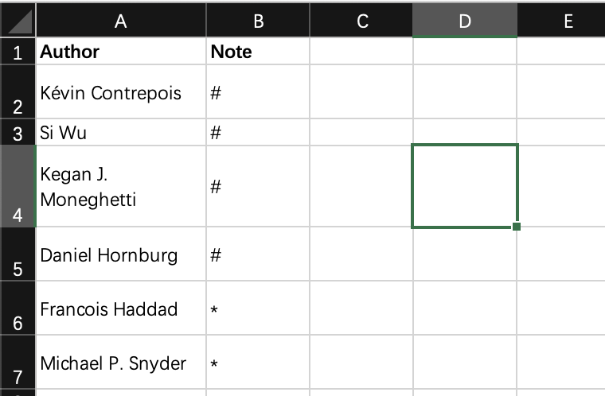
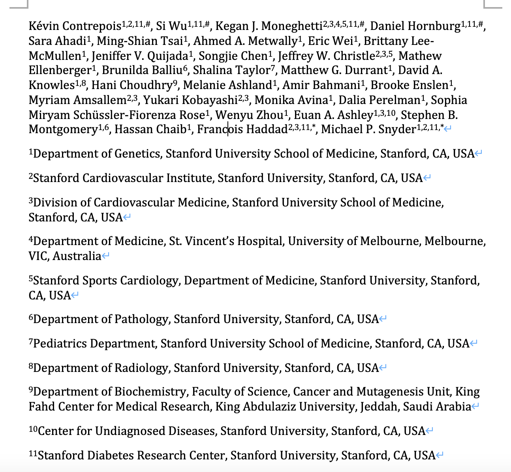
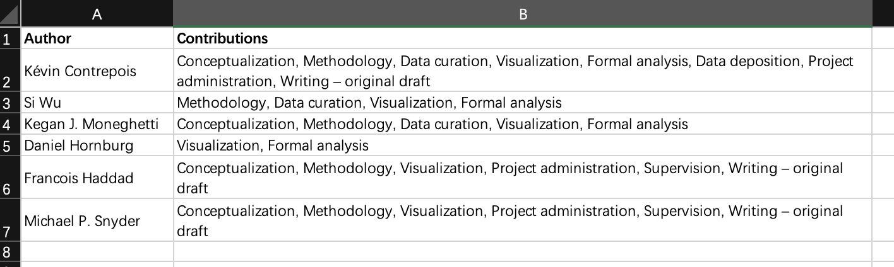

Motivation
SCI论文投稿时，我们要整理好作者和对应的单位，一般用数字上标对应下面的单位信息，然后用一些特殊符号如“#，*”来代表贡献相同的作者或者通讯作者。
一般一个课题组出来的成果，只有几个作者的情况我们手打一下就好了。但现在的研究更多都是交叉性质的，可能会涉及到很多课题组合作，一些大的研究可能还会有几十个作者和单位，比如下面一篇cell，一页纸都写不完。


一次手打完，不改了就还好，但这时老师叫你把某个单位顺序改一下，或者新加了个作者和单位，那么上面所有的数字上标都要随之改变，改起来就比较费劲了，还容易出错😂。
所以我简单写了一个R函数，实现从整理好的作者-单位表格中自动生成符合规范的作者-单位 Rmarkdown文件，然后点击一下knit就可以生成对应的word文件，上标也不需要自己手动设置。如果需要改顺序也是在表格中调整一下重新生成即可，还是比较方便的。
作者-单位
拿一篇cell文章《Molecular Choreography of Acute Exercise》做例子。
准备一个表格，至少包含两列列名为Author和Affiliation，注意这里的作者顺序就是文章里想要的顺序，默认的单位顺序是根据作者顺位生成的： 
如果要指定单位的顺序，那就再准备一列Affiliation的表格，保持想要的单位顺序： 
如果还要添加额外的符号上标，如共一的#和通讯的*，再准备一个两列表格，Author和Note： 
|
|
此时会输出一个test_author.rmd的文件，然后我们用Rstudio打开后点一下knit键进行编织，就可以得到word文件了：
上标格式也不用自己麻烦一个一个点了，如果要修改顺序也比较方便。
作者贡献
CRediT（贡献者角色分类法）是一种高级分类法，该方法将作者的贡献划分为14个类别，并对每个类别的角色详细精确地定义了作者的贡献。
|
|
| 贡献者角色（中文） | 贡献者角色（英文） | 定义 |
|---|---|---|
| 论文构思 | Conceptualization | 产生想法，构造或演绎发展主要的研究目的。 |
| 数据管理 | Data curation | 为数据的首用和后续复用产生元数据，整理数据，维护研究数据（包括软件或程序）。 |
| 形式分析 | Formal analysis | 使用统计、数学、计算或其他形式分析技术分析或合成研究数据。 |
| 获取资助 | Funding acquisition | 为了项目研究成果能够发表而去争取并获得资助。 |
| 调查研究 | Investigation | 实施研究和执行调查过程，特别是从事实验研究或收集数据和证据。 |
| 方法论 | Methodology | 开发或设计研究用的方法，建立模型。 |
| 项目管理 | Project administration | 为研究活动的策划和执行进行管理和协调。 |
| 提供资源 | Resources | 提供研究材料、试剂、病例、实验室样品、动物、仪器、计算设备资源或其他分析工具。 |
| 软件 | Software | 编程，研发软件，设计计算机程序，实施执行计算机程序及支持算法，测试已有的程序。 |
| 指导 | Supervision | 监督和领导研究活动的策划和执行，包括对核心成员以外的人员进行指导。 |
| 验证 | Validation | 对研究结果、实验或其他研究输出内容的复制和重现进行核实验证，包括整体的和部分的核实验证。 |
| 可视化呈现 | Visualization | 对发表的内容进行准备、创建或表述，特别是内容或数据的可视化展现。 |
| 初稿写作 | Writing – original draft | 对发表的内容进行准备、创建或表述，特别是撰写初稿，包括实质性翻译。 |
| 审核与编辑写作 | Writing – review & editing | 对原始研究团队提出的发表内容进行准备、创建或表述，特别是评论、注释或修改，包括发表前和发表后所发生的这些工作。 |
很多期刊都会让我们以CRediT的格式展示作者贡献，一般手打也很方便。但有时候会统一将名称进行缩写，这里也提供一个函数用来生成，准备一个两列表：

|
|
|
|